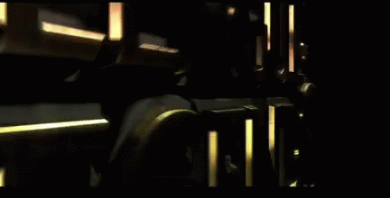

What is League of Legends?
League of Legends (LoL), commonly referred to as League, is a 2009 multiplayer online battle arena video game developed and published by Riot Games. Inspired by Defense of the Ancients, a custom map for Warcraft III, Riot's founders sought to develop a stand-alone game in the same genre. Since its release in October 2009, the game has been free-to-play and is monetized through purchasable character customization. The game is available for Microsoft Windows and macOS.
Introduction to League of Legends
League of Legends is a free 5v5 online MOBA game created and published by Riot Games. The end-game objective of the game is to destroy the enemy team's nexus, located deep into their base. Before doing so, players split into roles and head into lanes where they must kill minions for gold, battle enemy players and destroy their structures. Players choose champions in order to play the game, with all champions having unique abilities and roles. There is also a jungle with a wide variety of jungle monsters, as well as neutral monsters that can be killed by both teams such as Baron Nashor, Elemental Drakes or Elder Drake. The killing of these monsters grants different bonuses and rewards.

Top Lane is considered the most remote and distant lane from all. It is usually occupied by the Top Laner whose job is generally to farm as much as possible, avoid dying and impact the map with global spells such as Teleport. Historically durable champions with lots of health, resistances and crowd control have been the most optimal choice for the role. However over time ranged carry champions have been played as an alternative, generally by teams with strong Top Laners who can dominate their role and win the game for their team.
The Jungle role is considered by many as the most integral part of the team. The Jungler often dictates how the early game (the first 15-20 minutes) is played through his ganks and objective takes. The signature trademark of the Jungler is the ability to use Smite in order to secure objectives for his team. While the best options for the role are champions with crowd control for easier ganks, generally any champion can work in the jungle if he/she has the ability to clear jungle monsters at a decent pace.

Possibly the most iconic role of all, Mid Lane is one of the two primary carry roles in the game. Occupied primarily by ranged mages or assassins, Mid Lane is the most versatile role for the ability to roam around the map and make plays. Many great players such as Faker and Bjergsen have graced the Mid Lane and have gained a reputation for being the linchpins behind their respective teams.
AD Carry, also known as Marksman is one of two carry roles and considered by many as the main one. Situated most of the time at bottom lane alongside the Support, the job of the AD Carry is to farm as much as possible and gain items as fast as possible. Once mid to late game (20+ minutes) comes around, it's the AD Carry's job to output the maximum amount of damage he/she can without dying. Champions in this role are usually ranged and squishy, but deal a high amount of damage, especially with a lot of items.

The job of the Support is generally to protect the team's AD Carry and make his/her life easier. Supports can also roam around the map if their AD Carry can temporarily survive a 1v2 and impact other lanes. Usually champions with good base stats, good crowd control and low dependency on items are chosen for the role. However there are cases where damage-oriented champions can work as supports.